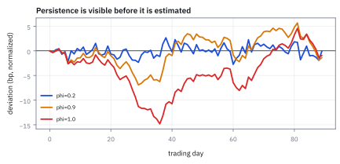
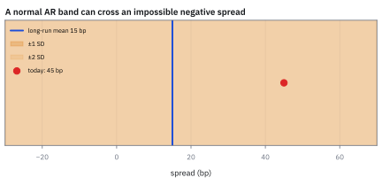
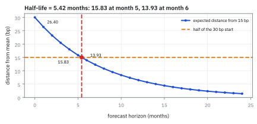
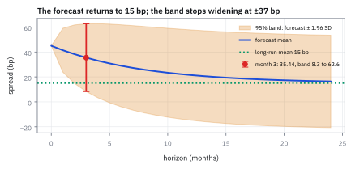

16.2 Autoregressive Processes (AR)
ใช้ค่าก่อนหน้าช่วยทำนายค่าปัจจุบัน
สเปรดหุ้นกู้คุณภาพสูงรายเดือนเข้ากับ AR(1) ที่ c = 1.8 bp, φ = 0.88 และข่าวใหม่ขนาด σ_ε = 9 bp วันนี้สเปรดอยู่ที่ 45 bp ค่าเฉลี่ยระยะยาว half-life และคำทำนาย 3 เดือนข้างหน้าเป็นเท่าใด?
เฉลย: ค่าเฉลี่ยระยะยาวคือ 15 bp ไม่ใช่ 1.8 bp ระยะห่าง 30 bp หดลงครึ่งหนึ่งทุก 5.42 เดือน คำทำนาย 3 เดือนคือ 35.44 bp แต่ช่วง 95% กว้างตั้งแต่ 8.3 ถึง 62.6 bp สัญญาณมีจริงแต่ไม่ชัด ได้กำไรคาดหวัง 0.69 หน่วยต่อความเสี่ยงหนึ่งหน่วย
ศัพท์ที่ใช้ในหัวข้อนี้
- autoregressive process (AR)
- แบบจำลองที่ใช้ lagged value ของ series เองเป็นตัวอธิบาย ใช้แทนความจำของ spread, rate หรือ residual
- mean reversion
- แรงดึงที่ทำให้ค่าซึ่งเบี่ยงจาก equilibrium ค่อย ๆ กลับหา long-run mean ใช้กำหนด horizon ของ trade และ stop
- innovation/shock
- ข่าวใหม่ที่คาดการณ์จากอดีตไม่ได้ในงวดนั้น ใช้แทน residual ที่ผลัก series ออกจากเส้นทางเดิม
- half-life
- เวลาที่ระยะห่างจากค่าเฉลี่ยที่คาดไว้เหลือครึ่งหนึ่ง ใช้แปลง φ เป็นระยะเวลาถือที่ต้องรอ
- random walk
- กระบวนการที่มี unit root และไม่มี mean reversion ระยะยาว ใช้เป็น baseline เมื่อ φ = 1
- duration
- ความไวของราคาหุ้นกู้ต่อ spread หุ้นกู้ duration 4 ปี เมื่อ spread แคบลง 1 bp ราคาขึ้นราว 4 bp ใช้แปลงการขยับของ spread เป็นกำไรขาดทุน
- Ornstein–Uhlenbeck process (OU)
- แบบจำลองแรงดึงกลับในเวลาต่อเนื่องของหัวข้อ 15.4 AR(1) คือ OU ที่ถูกสุ่มดูเป็นช่วงเวลาเท่ากัน
- autoregressive moving-average model (ARMA)
- แบบจำลองที่รวมความจำจากค่าก่อนหน้ากับ shock ก่อนหน้า ใช้เมื่อทั้งสองกลไกสำคัญ
- autoregressive integrated moving-average model (ARIMA)
- แบบจำลองที่ทำ differencing ก่อน fit แล้วจึงรวมส่วน AR กับ moving average ใช้กับระดับราคาที่ไม่ stationary
- moving-average process (MA)
- แบบจำลองที่ใช้ shock ปัจจุบันและอดีตจำนวนจำกัด ใช้อธิบายแรงกระแทกที่มีอายุสั้นและเป็นส่วนประกอบของ ARMA
- standard deviation (SD)
- รากที่สองของ variance จึงกลับมาอยู่หน่วยเดียวกับข้อมูล ใช้ตีกรอบขนาดการแกว่งและอ่านช่วงหนึ่งหรือสอง SD ในรูป
สัญลักษณ์ที่ใช้ในหัวข้อนี้
| สัญลักษณ์ | ความหมาย | หน่วย |
|---|---|---|
| $X_t$ | สเปรดหุ้นกู้คุณภาพสูง ณ เดือน t | bp |
| $c$ | ค่าคงที่ที่เติมเข้าไปทุกเดือน | bp ต่อเดือน |
| $\phi$ | สัดส่วนที่เดือนนี้จำค่าของเดือนก่อนไว้ | unitless |
| $\epsilon_t$ | ข่าวใหม่ของเดือน t มี mean 0 และขนาด $\sigma_\epsilon$ | bp |
| $\mu,\ V$ | long-run mean และ variance | bp และ bp² |
| $Y_t$ | ระยะห่างจากค่าเฉลี่ย $X_t-\mu$ | bp |
| $h,\ h_{1/2}$ | ระยะพยากรณ์ และ half-life | เดือน |
| $\gamma_k,\ \rho_k$ | autocovariance และ autocorrelation ที่ lag k | bp² และ unitless |
ภาพจำของ Yule: ลูกตุ้มนาฬิกาที่ถูกยิงด้วยเมล็ดถั่ว
ปี 1927 George Udny Yule ต้องอธิบายจำนวนจุดดับบนดวงอาทิตย์ ซึ่งขึ้นลงเป็นรอบราว 11 ปี แต่บางรอบยาว 9 ปี บางรอบ 13 ปี และสูงไม่เท่ากันเลย การฟิตคลื่นไซน์ที่มีคาบตายตัวจึงล้มเหลวเสมอ
Yule ใช้ภาพลูกตุ้มนาฬิกาในห้องที่มีแรงต้าน ปล่อยไว้มันจะค่อย ๆ หยุดนิ่ง แต่ถ้ามีเด็กแอบยิงเมล็ดถั่วใส่ลูกตุ้มแบบสุ่มตลอดเวลา ทุกเม็ดจะผลักให้มันแกว่งต่อ และเปลี่ยนทั้งความกว้างและจังหวะไปเล็กน้อย รอบที่ไม่สม่ำเสมอจึงเกิดขึ้นเองโดยไม่ต้องบังคับ
แรงที่ดึงลูกตุ้มกลับคือ $\phi X_{t-1}$ ส่วนเมล็ดถั่วคือ shock $\epsilon_t$ ในการเงินภาพนี้ตรงกับของที่มีแรงดึงกลับ เช่นสเปรดเครดิต ส่วนต่างราคาในการเทรดคู่ และความผันผวน แต่ไม่ตรงกับราคาหุ้นเอง
ปี 1931 Sir Gilbert Walker นำสมการเดียวกันไปทำนายลมมรสุมในอินเดีย จนเกิดเป็นสมการ Yule–Walker ในขั้นที่ 9 ซึ่งยังใช้ประมาณ parameter ของ time series มาจนทุกวันนี้
ขั้นที่ 1 — สมการ AR(1) และเงื่อนไขอยู่รอด
model ที่ง่ายที่สุดที่มีความจำ คือค่าเดือนนี้เท่ากับส่วนหนึ่งของเดือนก่อน บวกของที่เติมคงที่ บวกข่าวใหม่ แล้วมีเงื่อนไขข้อเดียวที่กันไม่ให้มันระเบิด
อ่านทีละชิ้น $c$ คือของที่เติมเข้าไปทุกเดือน 1.8 bp, $\phi X_{t-1}$ คือความจำที่ลากค่าเดือนก่อนมา 88% และ $\epsilon_t$ คือข่าวใหม่ขนาดราว 9 bp ที่ไม่มีใครรู้ล่วงหน้า
|φ| < 1 คือเส้นแบ่งเป็นตาย ที่ φ = 1 ข่าวเก่าไม่เคยจาง กลายเป็น random walk ที่ φ = 1.05 ค่าระเบิด ส่วน φ ติดลบทำให้ค่าสลับขึ้นลงทุกก้าว คล้าย bid-ask bounce ในหัวข้อ 16.3 ของเรามี 0.88 จึงผ่าน
ขั้นที่ 2 — ลองเดินสมการด้วยมือ: หกเดือนโดยไม่มีข่าวใหม่
ก่อนสูตรค่าเฉลี่ยและ half-life ลองป้อนตัวเลขของโจทย์ทีละเดือน โดยปิดข่าวใหม่ไว้ก่อน จะเห็นว่ามันถูกดึงไปหาเลขไหน และช้าแค่ไหน
ทุกเดือนค่าถูกคูณ 0.88 แล้วบวก 1.8 กลับเข้าไป เดือนแรกลดไป 3.6 bp แต่เดือนที่หกลดแค่ 1.9 bp ยิ่งเข้าใกล้บ้าน แรงดึงยิ่งอ่อน เพราะแรงดึงเป็นสัดส่วนกับระยะห่าง
ดูสองบรรทัดล่าง ระยะห่างจาก 15 เหลือ 88% ทุกเดือนพอดี ทำไมต้อง 15 เพราะถ้าเริ่มที่ 15 จะได้ 1.8 + 13.2 = 15 อยู่กับที่ นั่นคือจุดที่ของเติม 1.8 กับแรงหด 12% หักล้างกันพอดี ขั้นถัดไปจะเขียนจุดนี้เป็นสูตร
ในโลกจริงข่าวใหม่ทุกเดือนเขย่าเส้นทางนี้ออกไป แต่แรงดึงกลับ 12% ต่อเดือนยังทำงานอยู่ใต้เสียงรบกวนเสมอ
แล้วเอาไปใช้ทำอะไรได้จริงบ้าง
แบบจำลองที่ค่าเดือนนี้ขึ้นกับเดือนก่อน เป็นตัวแทนของสิ่งที่มีแรงดึงกลับเข้าหาค่ากลาง
ใช้กับส่วนต่างราคาในการเทรดคู่ ซึ่งควรกลับเข้าหาค่ากลาง และความเร็วกลับตัวคือสิ่งที่เราต้องการรู้
ใช้กับสเปรดเครดิต อัตราดอกเบี้ย และความผันผวน ซึ่งไม่เดินหนีไปเรื่อย ๆ แต่วนอยู่รอบระดับหนึ่ง
ใช้พยากรณ์ระยะสั้นพร้อมกรอบความไม่แน่นอน ซึ่งกว้างขึ้นเรื่อย ๆ แล้วตันที่ค่าหนึ่ง
Figure 16.2a — ค่า φ เปลี่ยนความจำอย่างไร

เส้นทั้งสามใช้ shock ชุดเดียวกัน φ = 0.2 กลับหาค่ากลางเร็ว φ = 0.9 จำ shock นาน และ φ = 1.0 เป็น random walk ที่ไม่มีค่ากลางให้กลับ การเลือก φ จึงเป็นการเลือกระยะเวลาของความเสี่ยง ไม่ใช่แค่รายละเอียดตอน fit
ขั้นที่ 3 — หา equilibrium mean ทีละบรรทัด
ถ้ามันนิ่งจริง ค่าเฉลี่ยต้องไม่เปลี่ยนตามเวลา เงื่อนไขนั้นแก้หาค่าเฉลี่ยได้ทันที กลวิธีนี้จะใช้ซ้ำอีกในขั้นที่ 4 คือตั้งให้ของสองเวลาเท่ากัน แล้วแก้สมการที่ได้ โดยไม่ต้องรู้เส้นทางเลยสักเส้น
หาค่าเฉลี่ยทั้งสองข้างของแบบจำลอง ข่าวใหม่มีค่าเฉลี่ยศูนย์จึงหายไป เหลือความสัมพันธ์ระหว่างค่าเฉลี่ยของเดือนนี้กับเดือนก่อน ซึ่งยังแก้ไม่ได้ เพราะมีของไม่รู้ค่าสองตัว
กุญแจอยู่บรรทัดสาม เงื่อนไขข้อแรกของหัวข้อ 16.1 บอกว่าถ้านิ่งจริง ค่าเฉลี่ยของเดือนนี้กับเดือนก่อนต้องเท่ากัน ของไม่รู้ค่าสองตัวจึงยุบเหลือตัวเดียว ถ้าไม่นิ่ง ก็ไม่มีค่าเดียวให้แก้ตั้งแต่ต้น
ย้ายข้างแล้วหาร ได้ 15 bp ตรงกับจุดนิ่งที่เดินมือเจอในขั้นที่ 2 อ่านผลให้ตรง c ไม่ใช่ระดับค่าเฉลี่ย มันคือของที่เติมทุกเดือน แล้วสะสมจนแรงดึงกลับหักล้างพอดี ยิ่งแรงดึงกลับอ่อน ระดับสมดุลยิ่งสูง
ทำไม 1.8 bp กลายเป็น 15 bp
c = 1.8 bp ไม่ใช่สเปรดเฉลี่ย มันคือของที่เติมเข้าไปทุกเดือน ของที่เติมเดือนนี้คือ 1.8 bp ของเดือนก่อนยังค้าง 88% คือ 1.58 bp ของสองเดือนก่อนค้าง 1.39 bp ทบกันไปเรื่อย ๆ รวมเป็น 1.8 × 8.333 = 15 bp ตัวคูณ 8.333 คือ 1/0.12 และขั้นที่ 8 จะแสดงที่มา
ยิ่ง φ ใกล้ 1 ตัวคูณยิ่งใหญ่ φ = 0.95 ได้ตัวคูณ 20 และ φ = 0.99 ได้ 100 ค่า c ที่ดูเล็กจิ๋วจึงสร้างค่าเฉลี่ยที่ใหญ่มากได้ ส่วนสเปรดวันนี้อยู่เหนือค่าเฉลี่ย 30 bp ไม่ใช่ 45 bp เต็ม ๆ
ขั้นที่ 4 — long-run variance จาก equilibrium
ใช้ตรรกะเดียวกันกับความกว้าง ถ้านิ่งแล้ว variance ต้องเท่ากันทุกเดือน ขั้นนี้อธิบายว่าทำไมข้อมูลที่มีความจำแรง ถึงแกว่งกว้างกว่าขนาดข่าวรายเดือน
เขียนแบบจำลองในรูประยะห่างจากค่าเฉลี่ยของขั้นที่ 3 แล้วดูข้อสมมติในบรรทัดสอง ข่าวของเดือนนี้ยังไม่มีใครรู้เมื่อเดือนก่อน จึงไม่เกี่ยวกับค่าเดือนก่อน ถ้าข้อนี้ไม่จริง พจน์ไขว้จะไม่หาย และทุกบรรทัดข้างล่างพัง
ตัวคูณหน้าตัวแปรออกมาเป็น φ² เมื่อผ่านเข้าไปใน variance เพราะถ้าเดือนก่อนห่างบ้าน 10 bp เดือนนี้จะห่าง 8.8 bp ความกว้างหดเป็น 0.88 เท่า variance จึงหดเป็น 0.7744 เท่า แล้วใช้ stationarity บังคับให้ความกว้างของสองเดือนเท่ากัน จึงแก้ได้
แทนเลขได้ 18.95 bp ตัวหาร 0.2256 ใหญ่กว่า 1 − φ = 0.12 เกือบสองเท่า ความจำจึงขยายระดับ 8.33 เท่า แต่ขยายความกว้างแค่ 1/0.4750 = 2.1 เท่า สเปรดจึงเคลื่อนช้าและอยู่ห่างบ้านได้นาน แต่ไม่ได้แกว่งแรงเป็นพิเศษ
สเปรดวันนี้กว้างแค่ไหน
ค่าเฉลี่ย 15 bp บวกลบสอง SD คือ 15 − 37.9 = −22.9 ถึง 15 + 37.9 = 52.9 bp ขอบล่างติดลบ แต่สเปรดติดลบไม่ได้ แปลว่า Normal AR บนระดับสเปรดตรง ๆ ใช้ได้แค่คร่าว ๆ งานจริงควร fit บน log ของสเปรด
สเปรดวันนี้ 45 bp อยู่ห่างค่าเฉลี่ย (45 − 15)/18.95 = 1.58 SD กว้างผิดปกติแต่ยังไม่ถึงขั้นวิกฤต ถ้ามันแคบลงตามแรงดึงกลับ ราคาหุ้นกู้จะขึ้น ขั้นถัดไปบอกว่าต้องรอนานแค่ไหน
Figure 16.2b — equilibrium และ uncertainty band

เส้นกลางคือค่าเฉลี่ย 15 bp แถบคือ ±1 และ ±2 SD ระยะยาว (18.95 bp) จุด 45 bp อยู่ที่ z = 1.58 และแถบ ±2 SD ยื่นลงไปถึง −22.9 bp ซึ่งสเปรดจริงไปไม่ถึง
ขั้นที่ 5 — เขียนในรูประยะห่าง แล้วหา half-life
เปลี่ยนมุมมองเป็นระยะห่างจากค่าเฉลี่ย จะเห็นชัดว่าแรงดึงกลับทำงานเร็วแค่ไหน รูปนี้โผล่ทุกครั้งที่มีของหดตัวเป็นสัดส่วน เช่น spread ของการเทรดคู่ในหัวข้อ 15.4 จึงควรจำไว้
ลบสมการจุดสมดุล μ = c + φμ ออกจากแบบจำลอง c หายไป เหลือรูปที่สะอาดที่สุด ระยะห่างเดือนนี้คือ 88% ของเดือนก่อนบวกข่าวใหม่ หาค่าเฉลี่ยของเดือนหน้า ข่าวใหม่มีค่าเฉลี่ยศูนย์ จึงเหลือแค่ตัวคูณ
ทำซ้ำ h ครั้งจึงได้เลขชี้กำลัง ไม่ใช่สูตรที่จำมา แต่เป็นการคูณ 0.88 ซ้ำ ๆ แบบที่ขั้นที่ 2 เดินมือ ถามว่ากี่เดือนจึงเหลือครึ่ง แล้วใส่ ln ทั้งสองข้างเพื่อดึงเลขชี้กำลังลงมา
แทนเลขได้ 5.42 เดือน ตรวจด้วยบรรทัดสุดท้าย 0.88⁵ = 0.5277 ยังเหลือเกินครึ่ง 0.88⁶ = 0.4644 เลยครึ่งไปแล้ว คำตอบจึงอยู่ระหว่าง 5 กับ 6 ค่อนไปทาง 5 ตรงกับระยะห่าง 15.83 และ 13.93 bp ในขั้นที่ 2
ทำไมรายงาน half-life แทน φ เพราะ φ = 0.88 รายเดือนกับรายวันคนละโลก แต่ half-life พูดเป็นเวลาจริงเสมอ และเป็นสูตรเดียวกับ half-life ของ OU ในหัวข้อ 15.4 โดย φ = e^(−θ)
Figure 16.2c — ระยะห่างลดลงครึ่งหนึ่งทุก 5.42 เดือน

เส้นสีน้ำเงินคือระยะห่างที่คาดไว้ เริ่มจาก 30 bp แล้วเหลือ 88% ทุกเดือน เส้นประแนวตั้งคือ half-life 5.42 เดือน ระหว่างเดือนที่ 5 (15.83 bp) กับเดือนที่ 6 (13.93 bp) half-life ไม่ใช่วันปิด trade อัตโนมัติ เพราะข่าวใหม่และต้นทุนซื้อขายยังอยู่
ขั้นที่ 6 — คำทำนายหลายเดือนข้างหน้า
ทำนายหลายก้าวโดยใช้สมการซ้ำ แล้วเขียนรวบเป็นสูตรเดียว ส่วนยากทำไปแล้วในขั้นที่ 5 ขั้นนี้จึงแทบไม่มีงานใหม่ เหลือแค่แทนเลขของโจทย์ทีละระยะ
ทำนายเดือนเดียวก่อน ค่าวันนี้รู้แล้ว ข่าวเดือนหน้ายังไม่เกิดและมีค่าเฉลี่ยศูนย์ จึงเหลือสองพจน์ ทำนายหลายเดือนไม่ต้องคำนวณใหม่ ใช้รูประยะห่างของขั้นที่ 5 แล้วบวกค่าเฉลี่ยกลับเข้าไป
แทนระยะห่างวันนี้ 30 bp ได้ 41.40, 35.44, 28.93 และ 21.47 bp ตรงกับการเดินมือในขั้นที่ 2 สูตรปิดปลอดภัยกว่าการเดินซ้ำ เพราะคำนวณ $\phi^h$ ครั้งเดียว ไม่สะสมเศษจากการปัดทุกก้าว
อ่านผลระยะยาว เลขชี้กำลังหดเข้าหาศูนย์ คำทำนายจึงลู่เข้าหาค่าเฉลี่ย 15 bp ไม่ใช่ศูนย์ ทุกคำทำนายคือ 15 บวกระยะห่างที่เหลือ ซึ่งหดลงเรื่อย ๆ
ขั้นที่ 7 — คำทำนายจะพลาดกว้างแค่ไหน
คำทำนายอย่างเดียวไม่พอ ต้องรู้ด้วยว่ามันจะพลาดกว้างแค่ไหน ขั้นนี้จบด้วยผลที่ใช้ตัดสินใจได้จริง ความพลาดของ AR(1) มีเพดาน ส่วนของ random walk ไม่มี
ทำนายหนึ่งเดือน ความพลาดคือข่าวใหม่ก้อนเดียว ขนาด 9 bp ทำนายหลายเดือน ความพลาดคือข่าวทุกก้อนที่ยังไม่เกิด ก้อนที่เกิดก่อนถูกส่งต่อผ่านความจำหลายชั้น จึงมีน้ำหนักน้อยกว่า
ใส่ variance ข่าวแต่ละก้อนไม่เกี่ยวกันจึงบวกกันได้ ตัวคูณออกมาเป็น φ² แล้วรวมอนุกรมเรขาคณิต แทนเลขได้ 9.00, 11.99, 13.87, 16.78 และ 18.50 bp ความพลาดโตเร็วช่วงแรกแล้วช้าลง
ความพลาดชนเพดาน 18.95 bp เท่ากับความกว้างระยะยาวในขั้นที่ 4 เพราะข่าวเก่าถูกลืมไป 12% ทุกเดือน random walk ไม่ลืมอะไรเลย ความพลาดจึงโตไม่หยุด ถึง 31.2 bp ที่ 12 เดือน ทำนายสเปรดหนึ่งปีจึงพอทำได้ แต่ทำนายราคาหุ้นหนึ่งปีทำไม่ได้
ช่วง 95% ที่ 3 เดือนคือ 8.3 ถึง 62.6 bp กว้าง ±27.19 bp เกือบสามเท่าของการลดที่คาดไว้ 9.56 bp คำทำนายที่ไม่มีช่วงจึงใช้ตัดสินใจไม่ได้
คำตอบ — สเปรด 45 bp จะกลับไปไหน เร็วแค่ไหน และเสี่ยงแค่ไหน
คำถาม: สเปรดวันนี้ 45 bp ค่าเฉลี่ยระยะยาว half-life และคำทำนาย 3 เดือนข้างหน้าเป็นเท่าใด และคุ้มไหมที่จะถือหุ้นกู้รอสเปรดแคบลง?
ของที่มี: ขั้นที่ 1 ถึง 7
1. ค่าเฉลี่ยระยะยาว 1.8/0.12 = 15 bp และ SD ระยะยาว 9/0.4750 = 18.95 bp สเปรดวันนี้อยู่ที่ z = 1.58
2. half-life = ln 0.5/ln 0.88 = 5.42 เดือน
3. คำทำนาย 41.40, 35.44, 28.93 และ 21.47 bp ที่ 1, 3, 6 และ 12 เดือน ช่วง 95% ที่ 3 เดือนคือ 8.3 ถึง 62.6 bp
4. ถือหุ้นกู้ duration 4 ปีไว้ 3 เดือน สเปรดคาดว่าแคบลง 45 − 35.44 = 9.56 bp ได้กำไรราคา 4 × 0.0956% = 0.38% ฉากแย่ที่ 62.6 bp สเปรดกว้างขึ้น 17.6 bp ขาดทุน 4 × 0.176% = 0.70% กำไรคาดหวังต่อความเสี่ยงคือ 9.56/13.87 = 0.69 ถ้าทำซ้ำได้ 4 รอบต่อปีจะได้ราว 0.69 × 2 = 1.38 ต่อปี แต่ต้องเชื่อว่า φ ถูกจริง
ตรวจเองใน 10 วินาที: 15 + 0.6815 × 30 = 15 + 20.44 = 35.44 และ 1.96 × 13.87 = 27.19
แปลว่าอะไร: AR(1) ให้ของสามอย่างที่โต๊ะเครดิตใช้ได้ทันที ระดับที่ควรเป็น 15 bp เวลาที่ต้องรอ 5.4 เดือนต่อครึ่งทาง และช่วงที่ต้องยอมรับ ±19 bp ตัวกลางมีค่าที่สุด ถ้าถือมา 15 เดือน เกือบสามเท่าของ half-life แล้วสเปรดยังไม่ขยับ แปลว่า model ผิด ไม่ใช่ตลาดผิด ส่วน 0.69 บอกว่าสัญญาณมีจริงแต่ไม่ชัด เทรดครั้งเดียวแพ้ง่าย ต้องทำหลายครั้งหลายตัวถึงเห็นผล
Figure 16.2d — คำทำนายกลับหาค่าเฉลี่ย แต่ช่วงความพลาดมีเพดาน

เส้นน้ำเงินคือคำทำนายที่ลู่เข้า 15 bp แถบคือช่วง 95% รอบคำทำนาย ซึ่งกว้างขึ้นเร็วในเดือนแรก ๆ แล้วหยุดที่ ±1.96 × 18.95 = ±37.1 bp จุดแดงคือเดือนที่ 3 ที่ 35.44 bp ช่วง 8.3 ถึง 62.6 bp รู้ค่าเฉลี่ยไม่ได้แปลว่ารู้สเปรดที่จะเกิดจริง
ขั้นที่ 8 — กางสมการย้อนหลัง: ที่มาของ |φ| < 1 และตัวคูณ 8.333
แทนสมการของเดือนก่อนเข้าไปซ้ำ ๆ จะเห็นว่า |φ| < 1 คือเงื่อนไขที่อนุกรมเรขาคณิตลู่เข้า และเห็นอีกทางว่าตัวคูณ 8.333 ที่ทำให้ 1.8 bp กลายเป็น 15 bp มาจากไหน
แทนสมการของเดือนก่อนเข้าไปแทน $X_{t-1}$ แล้วทำซ้ำ k ครั้ง ค่าวันนี้กลายเป็นสามก้อน ของที่เติมสะสม ค่าในอดีตไกลที่หดด้วย $\phi^k$ และข่าวทุกก้อนที่เคยเกิด ถ่วงน้ำหนักด้วยความจำ
ผลรวมของตัวคูณเข้าใกล้ 8.333 ช้า ๆ 1 พจน์ได้ 1 สองพจน์ 1.88 ห้าพจน์ 3.936 สิบพจน์ 6.012 ยี่สิบพจน์ 7.687 และห้าสิบพจน์ 8.319 คูณ 1.8 ได้ 15 bp ตรงกับขั้นที่ 3 จากคนละทาง
ถ้า φ = 1 ข่าวไม่เคยจาง variance โตตามจำนวนเดือนไม่หยุด คือ random walk ถ้า |φ| > 1 ค่าระเบิด ตัวหาร 1 − φ ที่เป็นศูนย์ตอน φ = 1 จึงไม่ใช่ข้อบกพร่องของสูตร แต่เป็นธรรมชาติของ random walk ที่ไม่มีค่าเฉลี่ยให้พูดถึง
ขั้นที่ 9 — Autocorrelation Function (ACF) และสมการ Yule–Walker
ความจำของ AR(1) วัดจากข้อมูลได้ตรง ๆ ด้วย autocorrelation ที่ lag k ขั้นนี้แสดงว่ามันต้องเท่ากับ φ ยกขึ้นเป็นเลขชี้กำลัง k ซึ่งเป็นทั้งวิธีประมาณ φ จากข้อมูล และวิธีเช็กว่าข้อมูลเป็น AR(1) จริงไหม
คูณระยะห่างของ k เดือนก่อนเข้าทั้งสองข้าง แล้วหาค่าเฉลี่ย ข่าวใหม่ของเดือนนี้ไม่เกี่ยวกับอดีตจึงหายไป เหลือ autocovariance ของสอง lag ติดกัน เทียบกับ γ₀ ได้สมการ Yule–Walker ρ_k = φρ_(k−1)
ไล่จาก ρ₀ = 1 ได้ ACF ที่สลายแบบเรขาคณิต ที่ φ = 0.88 ได้ 0.88, 0.7744, 0.6815 และข้ามครึ่งระหว่าง lag 5 กับ lag 6 ตรงกับ half-life 5.42 เดือน เพราะ correlation กับระยะห่างที่คาดไว้หดด้วยตัวคูณเดียวกัน
กลับทางกัน ถ้าวัด ρ₁ จากข้อมูลได้ 0.88 ก็ได้ φ = 0.88 ทันที นี่คือเหตุที่ Yule–Walker ยังใช้ประมาณ AR มาจนทุกวันนี้
กับดัก: อ่าน c เป็นสเปรดเฉลี่ย และเชื่อ φ มากเกินไป
อย่าอ่าน c = 1.8 bp ว่าสเปรดเฉลี่ย ค่าเฉลี่ยจริงคือ 15 bp ต่างกัน 8.33 เท่า และค่าเฉลี่ยไวต่อ φ มาก ถ้า φ จริงคือ 0.90 ได้ 1.8/0.10 = 18 bp ต่างไป 20% ถ้า 0.95 ได้ 1.8/0.05 = 36 bp ต่างไป 140% สเปรด 45 bp แทบไม่กว้างผิดปกติเลย สัญญาณทั้งหมดหายไป จึงต้องรายงาน confidence interval ของ φ คู่กับค่ากลางเสมอ ว่า φ จริงอาจอยู่ช่วงไหน
ข้อสมมติว่า c กับ φ คงที่พังในวิกฤต ปี 2008 สเปรดหุ้นกู้ที่ควรกลับหาค่าเฉลี่ยเดิมวิ่งไปหลายร้อย bp แล้วค้างอยู่เป็นปี เพราะระบอบเปลี่ยน ไม่ใช่เพราะข่าวก้อนใหญ่ ตรวจ rolling estimate และความเสถียรนอกช่วงข้อมูลก่อนใช้ trade
ข้อจำกัด: วิธีนี้สมมติอะไร และของจริงเป็นอย่างไร
| เรื่อง | วิธีนี้สมมติว่า | ของจริงเป็นอย่างไร | ผลที่ตามมาเวลาใช้งาน |
|---|---|---|---|
| ความเป็นเส้นตรง | ความสัมพันธ์กับอดีตเป็นเส้นตรง | แรงดึงกลับแรงขึ้นเมื่ออยู่ไกลค่ากลาง | แบบจำลองประเมินความเร็วกลับตัวในภาวะสุดโต่งต่ำเกินไป |
| ค่ากลางคงที่ | ค่ากลางไม่เปลี่ยน | ค่ากลางเลื่อนตามภาวะเศรษฐกิจ | การเดิมพันว่าจะกลับเข้าหาค่ากลางเก่า เป็นความเสี่ยงที่ใหญ่ที่สุดของกลยุทธ์กลุ่มนี้ |
| ความจำก้าวเดียว | จำแค่ค่าเดือนก่อน | ข้อมูลจริงมีความจำยาวกว่านั้น | ต้องเพิ่มจำนวนก้าวที่จำ ซึ่งแลกมาด้วย parameter ที่ต้องประมาณเพิ่ม |
แถวกลางคือสาเหตุที่กลยุทธ์รอให้กลับเข้าค่ากลางเสียหายหนักเมื่อเศรษฐกิจเปลี่ยนโครงสร้าง
ตรวจค่าเฉลี่ย half-life คำทำนาย และช่วง 95%
import numpy as np
c,phi,sig,x0=1.8,.88,9.,45.
mu=c/(1-phi)
sd=sig/np.sqrt(1-phi**2)
hl=np.log(.5)/np.log(abs(phi))
assert abs(mu-15)<1e-12 and abs(sd-18.95)<0.01
assert abs((x0-mu)/sd-1.58)<0.01
assert abs(hl-5.42)<0.01 and phi**5>.5>phi**6
x=x0
for h in range(1,13):
x=c+phi*x # walk the equation
assert abs(x-(mu+phi**h*(x0-mu)))<1e-9 # closed form agrees
f=[mu+phi**h*(x0-mu) for h in (1,3,6,12)]
assert np.allclose(f,[41.400,35.444,28.932,21.470],atol=1e-3)
sdh=lambda h: sig*np.sqrt((1-phi**(2*h))/(1-phi**2))
assert np.allclose([sdh(h) for h in (1,2,3,6,12)],[9,11.99,13.87,16.78,18.50],atol=0.01)
lo,hi=f[1]-1.96*sdh(3),f[1]+1.96*sdh(3)
assert abs(lo-8.3)<0.05 and abs(hi-62.6)<0.05
assert abs((x0-f[1])/sdh(3)-0.69)<0.01 # reward per unit of risk
assert np.allclose(sig*np.sqrt([3,6,12]),[15.6,22.0,31.2],atol=0.05) # random walk
assert abs(c/(1-.90)-18)<1e-9 and abs(c/(1-.95)-36)<1e-9 # mean vs phiโค้ดเดินสมการ 12 เดือนเทียบกับสูตรปิด แล้วตรวจ 15 bp, 18.95 bp, half-life 5.42 เดือน คำทำนาย 41.40 ถึง 21.47 bp ความพลาด 9.00 ถึง 18.50 bp ช่วง 8.3 ถึง 62.6 bp อัตราส่วน 0.69 และความไวของค่าเฉลี่ยต่อ φ ทุกค่าอยู่ในหน่วย bp
จาก AR ไป MA และ ARIMA
AR สร้าง memory จากค่าที่เห็นแล้วของ series จึงเหมาะกับระดับที่ mean-revert แต่ไม่อธิบาย shock ที่แฝงอยู่โดยตรง หัวข้อถัดไปจะเปรียบเทียบกับ MA ที่จำ innovation ระยะสั้น, รวมเป็น ARMA และ differencing เป็น ARIMA สำหรับ series ที่มี unit root
สรุปที่ใช้ได้จริง
- AR(1) คือของที่เติมคงที่ บวกความจำ บวกข่าวใหม่ อยู่รอดเมื่อ |φ| < 1
- สเปรด 45 bp ที่ c = 1.8, φ = 0.88, σ_ε = 9 มีค่าเฉลี่ยระยะยาว 15 bp half-life 5.42 เดือน และคำทำนาย 3 เดือน 35.44 bp ช่วง 95% คือ 8.3 ถึง 62.6 bp
- ค่าระยะยาวสามตัวใช้ parameter คนละงาน ค่าเฉลี่ยใช้ c กับ φ ความกว้างใช้ σ_ε กับ φ และ half-life แปลง φ เป็นจำนวนเดือน
- คำทำนายกลับหาค่าเฉลี่ย แต่ความพลาดโตจนชนเพดาน 18.95 bp ต่างจาก random walk ที่โตไม่หยุด
- ค่าเฉลี่ยไวต่อ φ มาก 0.88 ได้ 15 bp แต่ 0.95 ได้ 36 bp ตรวจความเสถียรของ φ และต้นทุนซื้อขายก่อนเปลี่ยนเป็นคำสั่งซื้อขาย